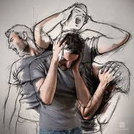

Ansiedad
Se caracteriza por una sensación de angustia leve o miedo, es un estado de agitación caracterizado.
por la anticipación del peligro, el predominio de síntomas psíquicos y la sensación de peligro inminente.
Sin embargo en una crisis de ansiedad, se genera una situación de pánico con síntomas similares a las de un
infarto, ocurre de manera instantánea. Puede darse por causas genéticas puede heredarse de padres a hijos,
puede darse por causas circunstanciales, hechos traumáticos como un accidente de transito, atentado o
incendios etc.
Síntomas
• Taquicardia
• Sensación de ahogo
• Opresión en el pecho
• Sudoración
• Escalofríos
• Temblores
• Nauseas
• Mareo
• Visiones
• Hormigueo
Tipos de ansiedad Trastorno de ansiedad generalizado:
se trata de una tensión crónica, aun cuando nada parece provocarla.
Trastorno de pánico
Estos ataques no tiene una causa directa, el paciente experimenta crisis recurrente y espontanea, la persona
presenta sensación de muerte.
Trastorno fóbico
Se identifica por una evitación o temor irracional ante un objeto, animal, evento o situación determinada.
Trastorno por estrés post traumático
Son aquellos casos en los que de presentan secuelas psicológicas tras un impacto de trauma emocional, una
guerra, una violación etc, se caracteriza por los recuerdos persistentes del suceso traumático.

Diagnostico
• Síntomas físicos
• Historia médica y psicológica
• Entrevista semiestructurada Tratamiento
Tratamiento farmacológico Tratamiento psicológico
Depresión
La depresión es un trastorno mental caracterizado por un bajo estado de animo y sentimientos de tristeza, el cual puede ocurrir luego de una gran decepción, una pérdida importante, una enfermedad o el
abuso de sustancias psicoactivas entre otras. También puede ser causada por un desequilibrio químico en el
cerebro, sus síntomas son: la tristeza patológica, perdida de interés y disminución en disfrutar actividades
que antes si disfrutaba realizar, sentimiento de culpa, irritabilidad, el pesimismo ante el futuro, ideas de
muerte y suicidio, cansancio exagerado, trastorno del sueño, disminución de apetito.
Tipos de depresión
• Depresión mayor: Causa sentimientos persistentes de tristeza, enojo o frustración. La depresión mayor puede
durar varias semanas o más
• Trastorno depresivo persistente: Causa síntomas depresivos que duran dos años o más.
• Depresión posparto: Después de dar a luz, muchas mujeres se sienten tristes, pero la depresión posparto
causa una tristeza y una ansiedad extremas después del parto. Puede impedir que una mujer se cuide a sí
misma o a su bebé.
• Depresión psicótica: Ocurre con una psicosis, un problema psiquiátrico más grave. La psicosis puede hacer que una persona pierda contacto con la realidad.
• Trastorno bipolar: Antes conocido
como depresión maníaca. Las personas con trastorno bipolar tienen episodios alternantes de manía (euforia
extrema) y depresión Diagnostico: Test de depresión, análisis de sangre.
Tratamiento: Medicamentos y psicoterapia